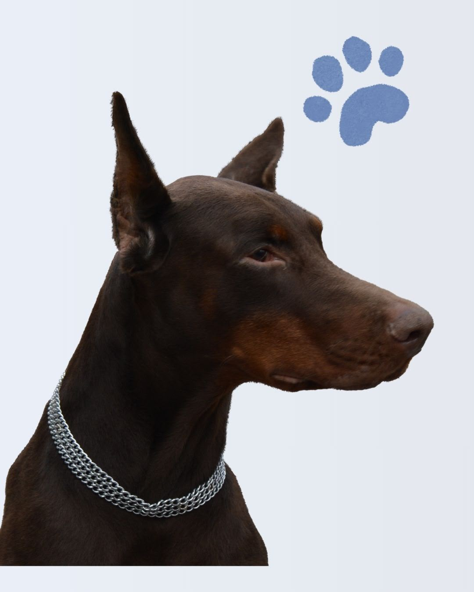
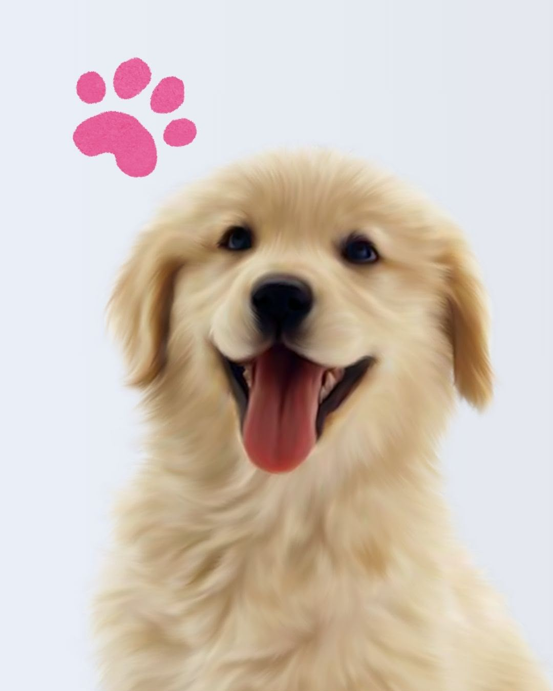
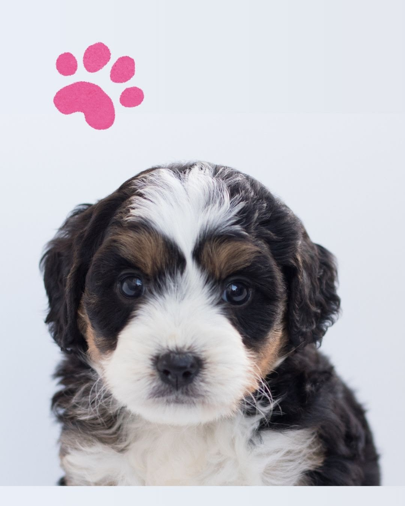
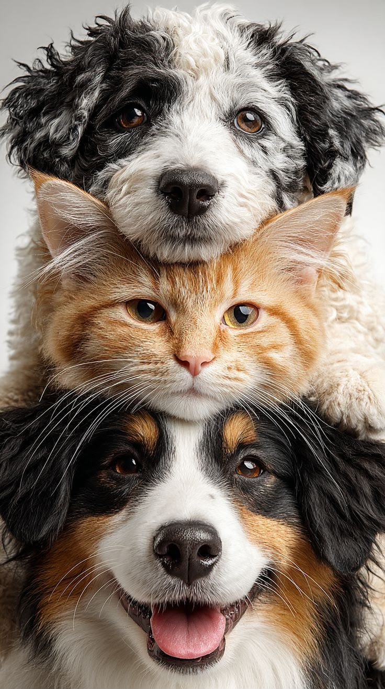

Plataforma para adoptar y apadrinar perritos y gatitos

Juguetón, le gusta pasear y convivir con personas. Está listo para una familia definitiva.

Tranquila y cariñosa, disfruta espacios tranquilos y las caricias suaves.

Muy curiosa y sociable, le gusta jugar con pelotas y estar cerca de las personas.

Si aún no puedes adoptar una mascota en tu hogar, puedes convertirte en su padrino o madrina: aportas una cuota mensual para alimentación, cuidados veterinarios y mantenimiento del refugio, y podrás visitarla en horarios establecidos.
Tu contribución ayuda a cubrir gastos básicos mientras la mascota espera una familia definitiva. Cada padrino recibe actualizaciones sobre su estado y fotografías periódicas.